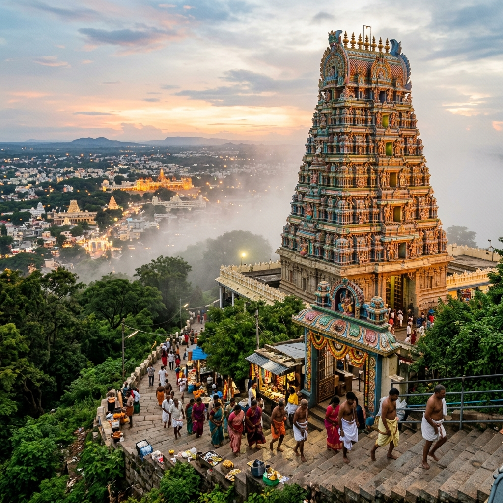

Temple · Sacred Hill
Chamundi Hills & Temple
A sacred hill rising 1,065 m above sea level, crowned by the 12th-century Chamundeshwari Temple dedicated to the goddess who slew demon Mahishasura. The 1,000-step stairway passes a 5-m tall Nandi bull statue. The hill offers a panoramic view of Mysore city below.